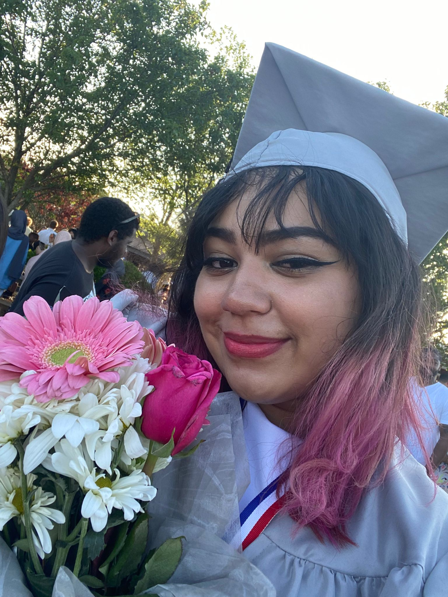

New Game - Resume
Want a copy of my resume?
SELECTED CHARACTER: Jasmine Guerra
TYPE: Computer Science/Game Design major at Atlantic Cape Community College
SKILL SET
WEB DESIGNER: Codes in basic HTML and CSS. Self-taught.
ARTISTIC ABILITY: Rough sketch objects and cartoony human faces.
MEDIA EDITOR: Manipulates videos and pictures into satifying media with effects. Self-taught.
BILINGUAL: Understands Spanish almost perfectly. Semi-fluent in speaking, reading, and writing in Spanish. Translates from Spanish to English and English to Spanish.

TRAITS
Quiet but once the conversation starts, there's no end. Quick and effficient learner. Lends a hand to others often.
EDUCATION
Attended Egg Harbor Township High School
Graduated June 2022
Atlantic Cape Community College
Student majoring in computer science -- present
ACHIEVEMENTS
- High School Graduate
- Varsity scholar in 9nth, 10th, and 12th grade.
- 90 average thoughout the school year
- Seal of Biliteracy Awardee
- Passed a state exam of proficiency in Spanish language.